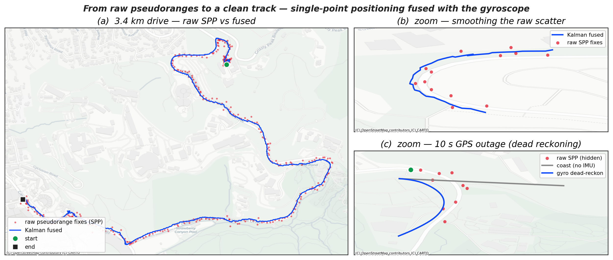

GPS + IMU Sensor Fusion
Topic: Computing a position from raw GNSS pseudoranges (single-point positioning), then Kalman-fusing it with a phone gyroscope so the track is smooth and survives a signal dropout. Chapter: 6 — Processing of the Signal
Background
Most “GPS tracks” you see are not raw at all: the receiver chip runs its own internal filter, and phone APIs blend in Wi-Fi, cell towers, and motion sensors before handing you a position. To see what a Kalman filter actually does, we start one level deeper — from the raw pseudoranges, the measured distances to each satellite — and build the position ourselves.
Two sensors, two complementary weaknesses. A single-point GNSS solution gives an absolute position but it is noisy (tens of metres) and it dies whenever fewer than four satellites are visible — under bridges, in tunnels, beside tall buildings. An IMU — here just the phone’s gyroscope — is quiet and fast (100 Hz) and never loses signal, but it measures only a rate: integrate it and the heading drifts without bound. A Kalman filter carries a running estimate of the vehicle state and its uncertainty, predicts forward with the gyro between fixes, and corrects toward each GNSS fix in proportion to how much it trusts the fix versus the prediction.
The data is a real 3.4 km drive through the Berkeley hills, logged with Google’s GnssLogger: raw multi-GNSS observations (a RINEX file, 354 one-second epochs, 7–8 GPS satellites each) plus a 100 Hz gyroscope, phone lying flat on the dash.
Step 1 — raw pseudoranges → a position (SPP)
A pseudorange is the distance to a satellite, measured from signal travel time. To turn a set of them into a position we need, for each satellite, where it was when it transmitted — computed from the broadcast ephemeris (Keplerian orbit elements downloaded for that day) — and then a least-squares solve for the four unknowns (x, y, z, \delta t_\text{rx}): receiver position and clock bias.
import numpy as np
GM = 3.986005e14; we = 7.2921151467e-5; F = -4.442807633e-10 # earth μ, spin rate, relativity
def sat_pos(e, t): # e = one satellite's ephemeris, t = transmit time (GPS sow)
A = e['sqrtA']**2; tk = t - e['Toe']
if tk > 302400: tk -= 604800 # week rollover
if tk < -302400: tk += 604800
n = np.sqrt(GM/A**3) + e['dn']; M = e['M0'] + n*tk; E = M
for _ in range(12): E = M + e['e']*np.sin(E) # solve Kepler for eccentric anomaly
v = np.arctan2(np.sqrt(1-e['e']**2)*np.sin(E), np.cos(E)-e['e']); phi = v + e['om']
u = phi + e['Cus']*np.sin(2*phi) + e['Cuc']*np.cos(2*phi) # 2nd-harmonic corrections
r = A*(1-e['e']*np.cos(E)) + e['Crs']*np.sin(2*phi) + e['Crc']*np.cos(2*phi)
i = e['i0'] + e['Cis']*np.sin(2*phi) + e['Cic']*np.cos(2*phi) + e['IDOT']*tk
xp, yp = r*np.cos(u), r*np.sin(u)
Om = e['Om0'] + (e['OmDot']-we)*tk - we*e['Toe'] # ascending node incl. earth spin
x = xp*np.cos(Om) - yp*np.cos(i)*np.sin(Om)
y = xp*np.sin(Om) + yp*np.cos(i)*np.cos(Om)
z = yp*np.sin(i)
dts = e['af0'] + e['af1']*(t-e['toc']) + F*e['e']*e['sqrtA']*np.sin(E) # sat clock + relativity
return np.array([x, y, z]), dts
def solve_epoch(obs, eph, sow, x0): # obs = {prn: pseudorange}, x0 = [X,Y,Z,c·δt] guess
c = 299792458.0; x = x0.copy()
for _ in range(12): # Gauss–Newton
A, L = [], []
for prn, P in obs.items():
e = eph[prn]
tau = (P - x[3]) / c # signal travel time (clock-corrected)
sp, dts = sat_pos(e, sow - tau) # satellite at transmit time
th = we * tau # Sagnac: earth turns during travel
sp = np.array([sp[0]*np.cos(th)+sp[1]*np.sin(th),
-sp[0]*np.sin(th)+sp[1]*np.cos(th), sp[2]])
los = sp - x[:3]; rho = np.linalg.norm(los)
L.append((P + c*dts - c*e['TGD']) - (rho + x[3])) # observed − predicted
A.append([-los[0]/rho, -los[1]/rho, -los[2]/rho, 1.0])
dx = np.linalg.lstsq(np.array(A), np.array(L), rcond=None)[0]; x += dx
if np.linalg.norm(dx[:3]) < 1e-3: break
return x[:3]Run per epoch, this yields the genuinely raw track — no chip filtering, no iono/tropo model — which scatters about 10 m (median, up to 80 m) around the truth. That scatter is the raw material the Kalman filter works on.
Step 2 — fuse with the gyroscope
The state is position and velocity in a local east–north (ENU) frame, \mathbf{x} = [\,E\; N\; v_E\; v_N\,]^\mathsf{T}.
Predict. A constant-velocity model advances position by \mathbf{v}\,\Delta t, but the velocity direction is rotated by the heading change \Delta\psi from the gyroscope — so on a bend the predicted velocity turns with the car instead of flying off straight:
F_k = \begin{bmatrix} 1 & 0 & \Delta t & 0 \\ 0 & 1 & 0 & \Delta t \\ 0 & 0 & \cos\Delta\psi_k & \sin\Delta\psi_k \\ 0 & 0 & -\sin\Delta\psi_k & \cos\Delta\psi_k \end{bmatrix}, \qquad \Delta\psi_k = \int_{t_{k-1}}^{t_k}\!\dot\psi\,dt .
Only the change in heading is used, so the arbitrary yaw origin cancels; the gyro’s scale and bias are calibrated once against the SPP course-over-ground (the phone lay flat, so its vertical-axis rate ≈ the vehicle’s turn rate — a correlation of −0.95). Feeding the accelerometer as a control input was tried and abandoned — double-integrating acceleration drifts far too fast.
Update. Each SPP fix corrects the position states through the standard Kalman gain, and a normalised-innovation (NIS) \chi^2 gate rejects any fix that disagrees wildly with the prediction — the defence against a bad multipath solution.
d = np.load('Data/kalman_gps_imu.npz')
sE, sN, st = d['spp_E'], d['spp_N'], d['spp_t'] # raw SPP fixes: east, north, time
gz_t, gz = d['gz_time'], d['gz'] # gyro: time, vertical-axis rate
slope, icpt = float(d['slope']), float(d['icpt']) # gyro→heading-rate calibration
OUT = tuple(d['outage']) # (t0, t1) of the simulated dropout
# heading change per step: integrate the gyro on a fine grid (coarse sampling aliases turns)
dt = 0.25; T = np.arange(0, st[-1] + dt, dt)
fdt = 0.01; FT = np.arange(0, st[-1] + dt, fdt)
psi = np.concatenate(([0], np.cumsum((slope*np.interp(FT, gz_t, gz) + icpt)[:-1]) * fdt))
dyaw = np.diff(np.interp(T, FT, psi), prepend=0.0)
def kalman(qa=1.0, sig=12.0, outage=None, coast_in_outage=False):
# gyro steering is always on; coast_in_outage freezes the heading ONLY during the
# blackout, so the dead-reckon and coast branches share an identical history up to it.
x = np.array([sE[0], sN[0], 0., 0.]); P = np.diag([100., 100, 9, 9])
gi = 0; track = []
for k, tk in enumerate(T):
in_out = outage and outage[0] <= tk <= outage[1]
c, s = np.cos(dyaw[k]), np.sin(dyaw[k])
R = np.eye(2) if (coast_in_outage and in_out) else np.array([[c, s], [-s, c]])
Fm = np.eye(4); Fm[0, 2] = Fm[1, 3] = dt; Fm[2:, 2:] = R # rotate velocity by Δψ
G = np.array([[dt*dt/2, 0], [0, dt*dt/2], [dt, 0], [0, dt]])
x = Fm @ x; P = Fm @ P @ Fm.T + G @ np.diag([qa**2, qa**2]) @ G.T # predict
while gi < len(st) and st[gi] <= tk + dt/2: # fold in SPP fixes
if st[gi] > tk - dt/2:
blocked = outage and outage[0] <= st[gi] <= outage[1] # simulated dropout
H = np.array([[1, 0, 0, 0], [0, 1., 0, 0]]); Rm = np.diag([sig**2, sig**2])
y = np.array([sE[gi], sN[gi]]) - H @ x
S = H @ P @ H.T + Rm
if not (blocked or y @ np.linalg.solve(S, y) > 13.8): # NIS χ² gate
K = P @ H.T @ np.linalg.inv(S)
x = x + K @ y; P = (np.eye(4) - K @ H) @ P
gi += 1
track.append(x.copy())
return np.array(track)
fused = kalman() # fuse everything
gyro = kalman(outage=OUT) # keep gyro-steering through the dropout
coast = kalman(outage=OUT, coast_in_outage=True) # freeze heading during the dropoutResult

Now that the input is genuinely raw, the filter has real work to do. With GNSS present (a, b) the fused track is pulled a median 9 m off the raw fixes — smoothing the ±10–20 m scatter into a continuous line that stays on the road. The decisive gain is the 10 s outage (c): withholding every fix across an 83° bend, the gyro-steered filter rounds the corner and finishes ≈ 35 m from truth, while the same filter with its heading frozen coasts straight and ends ≈ 107 m off — out on the hillside.
What the gyroscope does and doesn’t do. With satellites in view, fusion improves precision but not bias. Measured against the phone chip’s own multi-GNSS, carrier-smoothed solution as a reference, the fused track cuts the raw SPP’s RMS error by ~12 % (15.4 → 13.5 m) and trims the 90th-percentile tail — it averages down the large random excursions. But the median error is unchanged (≈ 11 m): that part is systematic — single-frequency ionosphere/troposphere and multipath, common to every pseudorange — and a gyro, which carries no absolute position, cannot touch it. So fusion is not magic accuracy; it is noise reduction on top of a GPS-limited floor. The gyro’s larger, unambiguous roles are two: during the outage (c) it is decisive — without heading the dead-reckoned track cannot turn — and even with GNSS present it lets the filter smooth hard through bends without cutting the corner, because the prediction now curves with the road. That last point is a genuine tradeoff: lowering the process noise tightens the line in (b) but makes the velocity, and hence the dead reckoning in (c), a little laggier; qa=1 sits deliberately in the middle. (This is loose coupling with a gyro only; a tightly-coupled filter that also uses the accelerometer and the raw pseudoranges can do more, e.g. coast on three satellites.)
A few honest caveats. This is a single-frequency solution with no ionosphere or troposphere correction, so the raw scatter is larger than a survey receiver’s — which only makes the filtering more visible. The gyro was calibrated once against the SPP course, and only heading changes are integrated (a scale-and-bias fit, not a magnetometer heading). The outage is simulated by hiding good fixes, which lets us score the dead-reckoning against known truth. And dead reckoning is a loan, not a gift: the error keeps growing, so the trick buys tens of seconds of graceful coasting — enough to cross a bridge — not minutes.
See Chapter 6 for filtering fundamentals. Map tiles © OpenStreetMap contributors, © CARTO; broadcast ephemeris from the BKG IGS archive. The processed drive (raw SPP fixes, gyro, calibration) is shipped as Data/kalman_gps_imu.npz.